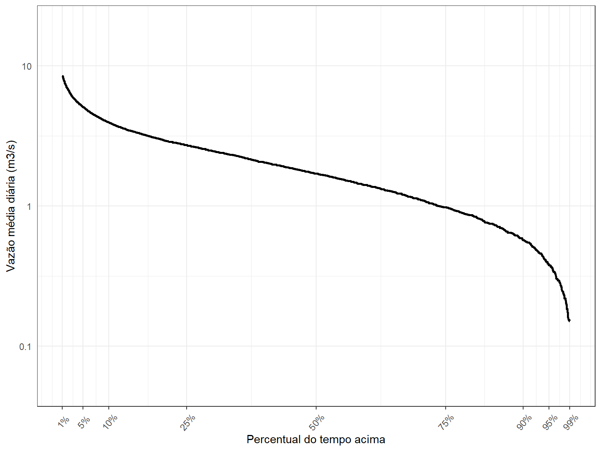
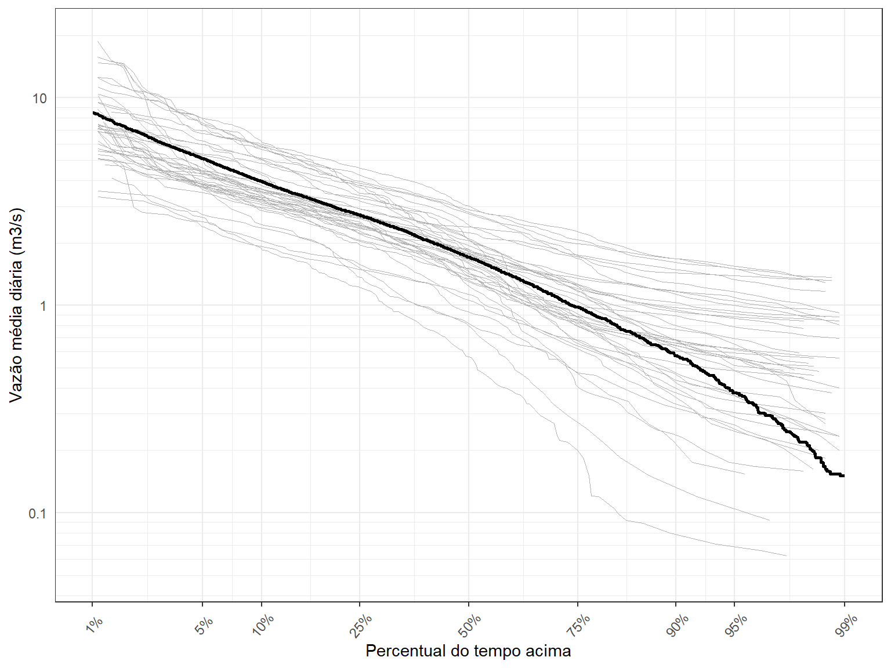
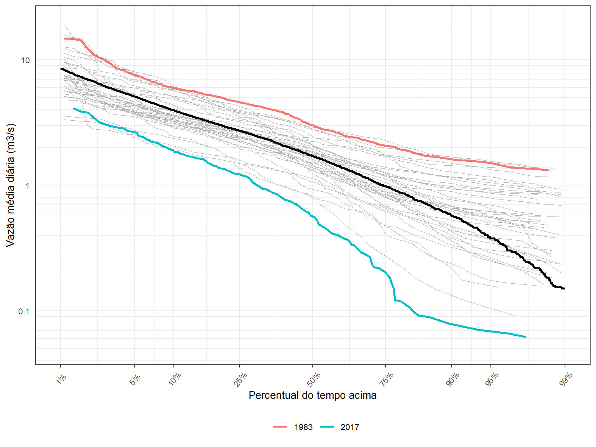

Apresentação
Esta página pode ser vista como um rascunho de uma segunda aula em Análise Exploratória de Dados, o que significa dizer que ainda está em construção.
A ideia é iniciar com a leitura de dados diários de vazão de uma dada estação, e a partir daí, realizar uma séries de atividades que se constitui basicamente da construção de gráficos que permitam caracterizar, de uma forma geral, o comportamentos das vazões no local.
Segue abaixo, uma lista das análises que se pretende realizar nesta aula:
- Construção de curva de permanência a nível diário em três estágios
acumulativos:
- com todos os anos do histórico de uma só vez
- uma curva para cada ano
- identificação da curva de permanência dos anos mais úmido e mais seco
- Sazonalidade das máximas anuais (esécie de rosas dos ventos para vazões)
- Construção das mínimas para um dado número de dias consecutivos
Leitura dos dados diários
Iniciamos esta aula fazendo a leitura do arquivo txt que
contém os dados de vazão média diária obtidos anteriormente.
## Leitura do arquivo de vazões médias diárias
Qd <- read.table(file = "dados/60435000.txt",
sep = "\t",
dec = ".",
header = T,
fileEncoding = "UTF-8",
colClasses = c("factor", "Date", "numeric"))
head(Qd,10) Cod_estacao Data Vazao
1 60435000 1978-05-01 NA
2 60435000 1978-05-02 NA
3 60435000 1978-05-03 NA
4 60435000 1978-05-04 NA
5 60435000 1978-05-05 NA
6 60435000 1978-05-06 NA
7 60435000 1978-05-07 NA
8 60435000 1978-05-08 NA
9 60435000 1978-05-09 NA
10 60435000 1978-05-10 NACurva de permanência
A curva de permanência de vazões relaciona os valores de vazão registrados na estação com as respectivas probabilidade de serem excedidos. Costuma-se representar os valores de vazão no eixo-y e a probabilide de excedência no eixo-x. Costuma-se interpretar a probabilidade de excedência como o percentual do tempo em que se observa valores de vazão maior ou iguais ao valor em questão.
Para construrios uma curva de permanência com os dados apresentados
acima, criaremos uma nova coluna no nosso dataframe,
denominado Qd, com os valores do ano corrspondente,
informação disponível na coluna de Data. Isso nos ajudará
nas etapas posteriores de cálculo.
Além disso, removeremos os anos em que haja falha nos dados de vazão, evitando distorções no cálculo dos percentis de vazão, necessários para a criação da curva de permanência. Essas duas etapas são realizadas no código abaixo,
## Criação de coluna com os anos
Qd <- Qd %>%
mutate(Ano = year(Data))
## Remoção de anos que contenham dias com falha
Anos_falha <- unique(Qd$Ano[is.na(Qd$Vazao)])
Anos_falha[1] 1978 2008 2009 2019# A tibble: 14,579 × 4
Cod_estacao Data Vazao Ano
<fct> <date> <dbl> <dbl>
1 60435000 1979-01-01 2.4 1979
2 60435000 1979-01-02 2.33 1979
3 60435000 1979-01-03 2.20 1979
4 60435000 1979-01-04 2.14 1979
5 60435000 1979-01-05 2.47 1979
6 60435000 1979-01-06 2.92 1979
7 60435000 1979-01-07 2.74 1979
8 60435000 1979-01-08 4.17 1979
9 60435000 1979-01-09 10.9 1979
10 60435000 1979-01-10 15.8 1979
# … with 14,569 more rowsPodemos notar que os anos 1978, 2008, 2009, 2019 continham falhas e foram removidos de nossa análise. A série restante contém um total de 14579 observações, relativas a 40 anos de dados sem falhas, com início em 1979 e fim em 2021.
Constuiremos primeiro a curva de permanência tradicional, aquela em que as obervações de todos os anos do histórico são empregadas no cálculo da probabilidade de excedência. Aqui, utilizaremos a chamada posição de plotagem de Weibull, conforme equação abaixo,
\[ P(Q>q_{(i)})=\frac{i}{n+1} \]
em que \(q_{(i)}\) é a i-ésima maior vazão observada, \(i\) é o posto (ranking) da observação, e \(n\) é o número de observações. Só para deixar claro, a probabilidade da vazão média diária ultrapassar a maior vazão média diária já registrada vale
\[ P(Q>q_{(1)}) = \frac{1}{n+1} \]
Utilizamos o código abaixo, escrito em R-base, para
realizar esse cálculo. AO final, apresentamos as primeiras 10 linhas do
dataframe denominado Qperm_all, com os valores
da probabilidade de excedência localizados na última coluna.
# Permanência calculada com todos os anos juntos
# Uso do R-base apenas
Qperm_all <- Qd[order(Qd$Vazao, decreasing = TRUE), ]
Qperm_all$index <- 1:nrow(Qperm_all)
Qperm_all$weibull <- Qperm_all$index/(nrow(Qperm_all)+1)
tibble(Qperm_all)# A tibble: 14,579 × 6
Cod_estacao Data Vazao Ano index weibull
<fct> <date> <dbl> <dbl> <int> <dbl>
1 60435000 2004-02-23 37.5 2004 1 0.0000686
2 60435000 1980-02-19 28.9 1980 2 0.000137
3 60435000 1983-02-10 25.3 1983 3 0.000206
4 60435000 1983-02-11 24.6 1983 4 0.000274
5 60435000 2004-02-24 19.3 2004 5 0.000343
6 60435000 2004-02-25 19.3 2004 6 0.000412
7 60435000 1994-03-07 19.3 1994 7 0.000480
8 60435000 1994-03-06 18.9 1994 8 0.000549
9 60435000 2004-01-28 18.8 2004 9 0.000617
10 60435000 2016-01-20 17.8 2016 10 0.000686
# … with 14,569 more rowsNote que as vazões estão ordenadas de forma decrescentte, com o maior valor do histórico tendo ocorrido em 2004-02-23.
Poderíamos ter obtido o mesmo resultado utilizando o pacote
tidyverse, como pode ser observado abaixo. É sempre bom
saber realizar algo de manieras diferentes. Utilize a que você achar
mais fácil.
Qperm_allt <- Qd %>%
arrange(desc(Vazao)) %>%
mutate(index = rank(-Vazao)) %>%
mutate(weibull = index/(n()+1))
tibble(Qperm_allt)# A tibble: 14,579 × 6
Cod_estacao Data Vazao Ano index weibull
<fct> <date> <dbl> <dbl> <dbl> <dbl>
1 60435000 2004-02-23 37.5 2004 1 0.0000686
2 60435000 1980-02-19 28.9 1980 2 0.000137
3 60435000 1983-02-10 25.3 1983 3 0.000206
4 60435000 1983-02-11 24.6 1983 4 0.000274
5 60435000 2004-02-24 19.3 2004 5.5 0.000377
6 60435000 2004-02-25 19.3 2004 5.5 0.000377
7 60435000 1994-03-07 19.3 1994 7 0.000480
8 60435000 1994-03-06 18.9 1994 8 0.000549
9 60435000 2004-01-28 18.8 2004 9 0.000617
10 60435000 2016-01-20 17.8 2016 10 0.000686
# … with 14,569 more rowsAgora já temos os elementos necessários para realizar a plotagem da
curva de permanência, quais sejam: a vazão média diária (eixo-y),
armazenada na coluna Vazao de nosso dataframe,
e a probabilidade de excedênia (eixo-x), armazeada na coluna
weibull.
O código abaixo faz a plotagem utilizando o pacote
ggplot2. Plotamos a vazão na escala logarítmica para
facilitar a visualização.
ggplot() +
geom_line(data = Qperm_all,aes(weibull,Vazao),colour = 'black', size = 1) +
scale_y_continuous(name = 'Vazão média diária (m3/s)',
trans = 'log10',
breaks = c(0.01, 0.1, 1, 10, 100, 1000, 10000),
limits = c(0.05, 20),
labels = c(0.01, 0.1, 1, 10, 100, 1000, '10,000')) +
scale_x_continuous(name = 'Percentual do tempo acima',
limits = c(0.01,0.99),
breaks = c(0.01, 0.05,0.1,0.25,0.5,0.75, 0.9,0.95, 0.99),
labels = c('1%','5%', '10%', '25%', '50%', '75%', '90%','95%', '99%'))
O próximo passo é determinar as curvas de permanência para cada uma dos anos do histórico, e plotá-las junto com a curva acima. Isso nos dará uma ideia do grau de variabilidade da curva de permanência de ano para ano.
Aqui, nos restringiremos a usar o pacote tidyverse para
rearrumar o dataframe e realizar as operações necessárias.
Como faremos uma curva de permanência para cada ano do histórico,
precisaremos calcular as probabilidades de excedência de forma separada
para cada ano. Faremos isso utilizando a função group_by,
como apresentado no código abaixo,
# Permanência calculada para cada ano
# Uso do tidyverse e pipe
Qperm_ano <- Qd %>%
arrange(Ano, desc(Vazao)) %>%
group_by(Ano) %>%
mutate(index = rank(-Vazao)) %>%
mutate(weibull = index/(n()+1))
tibble(Qperm_ano)# A tibble: 14,579 × 6
Cod_estacao Data Vazao Ano index weibull
<fct> <date> <dbl> <dbl> <dbl> <dbl>
1 60435000 1979-01-20 16.1 1979 1 0.00273
2 60435000 1979-01-10 15.8 1979 2 0.00546
3 60435000 1979-01-19 15.2 1979 3 0.00820
4 60435000 1979-02-07 12.5 1979 4 0.0109
5 60435000 1979-02-22 11.6 1979 5 0.0137
6 60435000 1979-01-12 11.3 1979 6 0.0164
7 60435000 1979-01-09 10.9 1979 7 0.0191
8 60435000 1979-01-21 10.5 1979 8 0.0219
9 60435000 1979-01-11 9.61 1979 9 0.0246
10 60435000 1979-01-13 9.19 1979 10 0.0273
# … with 14,569 more rowsSó nos resta agora fazer a plotagem. Como incluiremos 40 novas
curvas, é importante que utilizemos uma linha bem fina e uma cor
bastante suave. Utilizaremos a cor gryy70 com tamanho
0.2. Você pode experimentar as diferentes possibilidades
que o ggplot2 oferece.
O código para a plotagem segue abaixo,
ggplot() +
geom_line(data = Qperm_ano,aes(x = weibull, y = Vazao,group = Ano),
colour = 'grey70', size = 0.2) +
geom_line(data = Qperm_all,aes(weibull,Vazao),colour = 'black', size = 1) +
scale_y_continuous(name = 'Vazão média diária (m3/s)',
trans = 'log10',
breaks = c(0.01, 0.1, 1, 10, 100, 1000, 10000),
limits = c(0.05, 20),
labels = c(0.01, 0.1, 1, 10, 100, 1000, '10,000')) +
scale_x_continuous(name = 'Percentual do tempo acima',
limits = c(0.01,0.99),
breaks = c(0.01, 0.05,0.1,0.25,0.5,0.75, 0.9,0.95, 0.99),
labels = c('1%','5%', '10%', '25%', '50%', '75%', '90%','95%', '99%'))Podemos perceber uma faixa de variação relativamente grande de ano para ano para os diferentes valores de percentis.
Para faciliatr a visualização, faremos duas modificações na Figura acima. Primeiro, vamos alterar a linha de grade, tornando-a mais refinada. Depois, iremos fazer uma transformação no eixo-x para deixar mais claro o comportamento dessas curvas nas regiões extremas da probabilidade de excedência.
Para a primeira parte, utilizaremos a função abaixo, que constrói um
novo conjunto de linhas de grade na escala logarítmica, código este que
foi retirado do link abaixo. Para a segunda parte, empregaremos uma
transformação do tipo probit aos valores de probabilidade,
transformando essas porbabilidades em quantis da distribuição
normal-padrão.
# Function to plot minor breaks at a log scale
# https://stackoverflow.com/questions/30179442/plotting-minor-breaks-on-a-log-scale-with-ggplot
log10_minor_break = function (...){
function(x) {
minx = floor(min(log10(x), na.rm=T))-1;
maxx = ceiling(max(log10(x), na.rm=T))+1;
n_major = maxx-minx+1;
major_breaks = seq(minx, maxx, by=1)
minor_breaks =
rep(log10(seq(1, 9, by=1)), times = n_major)+
rep(major_breaks, each = 9)
return(10^(minor_breaks))
}
}
log10_major_break = function (...){
function(x) {
minx = floor(min(log10(x), na.rm=T))-1;
maxx = ceiling(max(log10(x), na.rm=T))+1;
n_major = maxx-minx+1;
major_breaks = seq(minx, maxx, by=1)
return(10^(major_breaks))
}
}O código para a nova Figura segue na sequência,
ggplot() +
geom_line(data = Qperm_ano,aes(x = weibull, y = Vazao,group = Ano),
colour = 'grey70', size = 0.2) +
geom_line(data = Qperm_all,aes(weibull,Vazao),colour = 'black', size = 1) +
scale_y_continuous(name = 'Vazão média diária (m3/s)',
trans = 'log10',
breaks = c(0.01, 0.1, 1, 10, 100, 1000, 10000),
minor_breaks = log10_minor_break(),
limits = c(0.05, 20),
labels = c(0.01, 0.1, 1, 10, 100, 1000, '10,000')) +
scale_x_continuous(name = 'Percentual do tempo acima',
trans = 'probit',
limits = c(0.01,0.99),
breaks = c(0.01, 0.05,0.1,0.25,0.5,0.75, 0.9,0.95, 0.99),
labels = c('1%','5%', '10%', '25%', '50%', '75%', '90%','95%', '99%'))
Veja que as mudanças implementadas permitiram visualizar melhor os resultados, principalmente para os quantis acima de 90%.
Dá para notar, por exemplo, que a \(Q_{0.95}\) vale 0.38 m\(^3\)/s quando se emprega todo o conjunto de anos do histórico, muito embora, numa análise a nível anual, seu valor pode variar entre entre 1.48 m\(^3\)/s e 0.07 m\(^3\)/s.
Para finalizar este esta atividade em relação à curva de permanência, e para chamar a atenção para essa variabilidade de ano para ano, vamos identificar o ano mais seco e o ano mais úmido, e diferenciá-los na Figura acima.
Para isso, precisamos identificar quem são esses anos. Vamos utilizar como métrica para a definição do ano mais e do ano mais seco, a vazão média anual.
O código abaixo mostra com essa identificação pode ser feita,
## Determina o ano mais úmido e o ano mais seco
Qanual <- Qd %>%
group_by(Ano) %>%
summarise(Qano = mean(Vazao))
ano_seco <- as.numeric(Qanual[which.min(Qanual$Qano),1])
ano_seco[1] 2017ano_umido <- as.numeric(Qanual[which.max(Qanual$Qano),1])
ano_umido[1] 1983Para tornar as curvas de permanência de 1983 e 2017 mais proeminentes na Figura acima, basta colorí-las.
Para isso, vamos construir um novo dataframe apenas ocm
esses anos,
anos_extremos <- Qd %>%
filter(Ano %in% c(ano_seco, ano_umido)) %>%
arrange(Ano, desc(Vazao)) %>%
group_by(Ano) %>%
mutate(index = rank(-Vazao)) %>%
mutate(weibull = index/(n()+1))
tibble(anos_extremos)# A tibble: 730 × 6
Cod_estacao Data Vazao Ano index weibull
<fct> <date> <dbl> <dbl> <dbl> <dbl>
1 60435000 1983-02-10 25.3 1983 1 0.00273
2 60435000 1983-02-11 24.6 1983 2 0.00546
3 60435000 1983-02-09 15.6 1983 3 0.00820
4 60435000 1983-01-23 14.7 1983 4 0.0109
5 60435000 1983-02-12 14.6 1983 5 0.0137
6 60435000 1983-03-26 14.3 1983 6 0.0164
7 60435000 1983-03-22 12.1 1983 7 0.0191
8 60435000 1983-03-27 10.9 1983 8 0.0219
9 60435000 1983-01-02 10.4 1983 9 0.0246
10 60435000 1983-02-08 9.95 1983 10 0.0273
# … with 720 more rowsFazemos isso no código abaixo, incluindo uma legenda para identificar quem é quem.
# Plotagem
ggplot() +
geom_line(data = Qperm_ano,aes(x = weibull, y = Vazao,group = Ano),
colour = 'grey70', size = 0.2) +
geom_line(data = Qperm_all,aes(weibull,Vazao),colour = 'black', size = 1) +
geom_line(data = anos_extremos, aes(x = weibull, y = Vazao, colour = factor(Ano)), size = 1) +
scale_colour_discrete(name = NULL) +
theme(legend.position = 'bottom',text = element_text(size = 10)) +
scale_y_continuous(name = 'Vazão média diária (m3/s)',
trans = 'log10',
breaks = c(0.01, 0.1, 1, 10, 100, 1000, 10000),
minor_breaks = log10_minor_break(),
limits = c(0.05, 20),
labels = c(0.01, 0.1, 1, 10, 100, 1000, '10,000')) +
scale_x_continuous(name = 'Percentual do tempo acima',
trans = 'probit',
limits = c(0.01,0.99),
breaks = c(0.01, 0.05,0.1,0.25,0.5,0.75, 0.9,0.95, 0.99),
labels = c('1%','5%', '10%', '25%', '50%', '75%', '90%','95%', '99%'))
Sazonalidade das vazões máximas anuais
Quando o interesse se dá na modelagem das vazões máximas de um dada estação fluviométrica, é importante compreender quando, ao longo do ano, esses eventos mais extremos ocorrem, de forma a analisar os possíveis mecanismos geradores dessas grandes cheias.
Na modelagem estatística de eventos de cheia, costuma-se assumir, a priori, que a série de máximos é homogênea, o que justifica o uso de apenas uma distribuição teórica de probabilidades.
Entretanto, isso nem sempre é verdade, pois é possível que haja diferentes mecanismos físicos geradores das vazões mais altas. Esses mecanismos podem ocorrer em diferentes épocas do ano, de forma que num dado ano, digamos, a maior cheia possa ter ocorrido devido ao mecanismo A, enquanto que no ano seguinte, tenha sido o resultado do mecanismo gerador B. Em casos como esse, o mais indicado é modelar as vazões máximas como uma combinação de duas distribuições distintas, uma para cada mecanismo gerador.
Visualizar quando as grandes cheias usualmente ocorrem ao longo do ano é um primeiro passo nesse tipo de análise, e isso é exatamente o que faremos aqui.
Iniciamos esta atividade criando um novo dataframe,
baseado no dataframe de vazões média diárias sem falhas,
Qd (ver Curva de Permanência).
Este novo dataframe irá conter quatro colunas:
- col1: código da estação
- col2: ano hidrológico
- col3: vazão máxima daquele ano hidrológico
- col4: data da ocorrênca da vazão máxima
Para isso, utilizaremos a função fun_max_ano,
apresentada abaixo,
# Contrução da série de máximos anuais a partir de um ano hidrológico ####
fun_max_ano <- function(tabela = NA,
comeco_ano_hidro = 8){
# Transformar a coluna Data em "Dates" (caso esteja em character)
tabela$Data <- as.Date(tabela$Data)
# Definir se o mês em questão entra no ano atual ou no próximo ano
desloc_ano <- ifelse(month(tabela$Data) < comeco_ano_hidro, 0, 1)
# Ano Hidro
tabela$ano_hidro <- year(tabela$Data) + desloc_ano
# Fazer uma tabela final apenas com os máximos anuais e a respectiva data de ocorrência
max_anuais <-
tabela %>%
group_by(Cod_estacao, ano_hidro) %>%
summarise(maxima = max(Vazao),
data_maxima = Data[which.max(Vazao)])
}Veja que a função fun_max_ano assume que o ano
hidrológico começa no mês de agosto, o que parece razoável para a
estação que estamos utilizando. Se você achar que o ano hidrológico deve
começar em outro mês, defina o mês quando chamar a função.
Chamamos a referida função e criamos o dataframe
denominado Q_max, cujas primiras linhas podem ser
observadas na sequência.
Q_max <- fun_max_ano(Qd)
tibble(Q_max)# A tibble: 43 × 4
Cod_estacao ano_hidro maxima data_maxima
<fct> <dbl> <dbl> <date>
1 60435000 1979 16.1 1979-01-20
2 60435000 1980 28.9 1980-02-19
3 60435000 1981 11.1 1981-03-20
4 60435000 1982 12.8 1982-01-20
5 60435000 1983 25.3 1983-02-10
6 60435000 1984 9.25 1983-10-22
7 60435000 1985 8.91 1985-01-27
8 60435000 1986 10.4 1986-01-29
9 60435000 1987 12.4 1986-12-30
10 60435000 1988 17.1 1988-03-13
# … with 33 more rowsAgora que já temos a data completa da ocorrência de cada uma das vazões máximas anuais, precisamos mapeá-las para coordenada polar de forma que seja possível construir uma espécie de rosa dos ventos, mas para as vazões máximas anuais.
A lógica dessa rosa das vazões é que cada ocorrência seja representada por duas variáveis: a magnitude da vazão, representada pelo tamanho do segmento, e a data de ocorrência dentro do ano, representada pela direção do segmento. Aqui, representaremos uma cheia no dia 01 de janeiro com um segmento na direção Note-Sul apontando para cima. Em outras palavras, a duração de cada ano do histórico será representada por uma volta inteira no círculo, enquanto a ocorrência de uma cheia numa data específica será mapeada para um ângulo em radianos.
Para realizar tal mapeamento, faremos uso da função
Date.to.Angle, apresentada abaixo, gentilmente
compartilhada por Tony Ladson em sua conta de GitHub, cujo endereço
aparece no início da função.
# Função compartihada por Tony Ladson
# https://gist.github.com/TonyLadson/843410a1f9e1f1bbf1f48eeeee79a007
Date_to_Angle <- function(my.date){
start.year <- floor_date(my.date, 'year')
end.year <- ceiling_date(my.date, 'year')
length.year <- as.numeric(difftime(end.year, start.year, units = 'sec'))
time.since.year.start <- as.numeric(difftime(my.date, start.year, units = 'sec'))
2 * pi * time.since.year.start/length.year # date as angle
}A função Date.to.Angle lê as datas de ocorrência das
máximas anuais, e para cada um dos anos, determina o tempo decorrido, em
segundos, guardando a resposta na variável
time.since.year.start. Isso permite lidar de forma adequada
com os anos bissextos que por ventura apareçam.
Na sequência, a função mapeia cada uma das vazões máximas para um ângulo em radianos, assumindo que \(2\pi\) radianos tenha exatamente a extensão do ano em segundos.
Com essa função em mãos, podemos criar uma nova coluna do
dataframe Q_max com os ângulos em radianos, e
isso é feito no código abaixo, que determina também, nas duas primeiras
linhas, quais seriam os valores, em radianos, das datas de início de
cada mês do ano, informação necessária para construir a nossa rosa das
vazões.
# gera sequência e calcula ângulo para informações mês a mês
month.start <- yday(seq(as.Date('2010-01-01'),as.Date('2010-12-31'), by='1 months'))
month.start.radians <- 2*pi*month.start/365.25
# Gera ângulo para cada vazão máxima anual do histórico
Q_max <- Q_max %>%
mutate(rad = Date_to_Angle(data_maxima))Para realizar a plotagem, vamos mais uma vez usufruir da generosidade de Tony Ladson, que nos fornece o script para a plotagem. Fizemos pequenas adaptações no script original, mas em essência, o script é o mesmo.
ggplot(Q_max,aes(x=rad, y=maxima)) +
coord_polar('x', start = 0, direction = 1) +
geom_segment(aes(y = 0, xend = rad, yend = maxima)) +
scale_x_continuous(name = 'Ocorrência das máximas anuais', breaks = month.start.radians, labels = month.name, limits = c(0, 2*pi)) +
scale_y_continuous(name = bquote('Máximas anuais (m' ^3 *'s' ^-1 *')')) +
theme_bw() +
theme(
panel.background = element_rect(fill="grey99"),
axis.title.x = element_text(colour="grey20", size=12, margin=margin(20,0,0,0)),
axis.text.x = element_text(colour="grey20",size=8),
axis.title.y = element_text(colour="grey20",size=12, margin = margin(0,20,0,0)),
axis.text.y = element_text(colour="grey20",size=8),
legend.title = element_text(colour="grey20",size=12),
plot.margin = unit(c(0.5, 0.5, 1, 0.5), "cm")) # top, right, bottom, leftEmbora haja espaço para melhorias nessa plotagem, podemos ver claramente que as grandes cheias nesta estação fluviométrica ocorrem entre os meses de dezembro e março, com honrosas exceções em outubro e abril, mas sempre com magnitudes menores.
Análise de veranicos de chuva
Baixar dados de chuva
Identificar veranicos
Plotagem de período de veranicos
Frequência de veranicos de uma dada extensão
Análise de seca
Baixar dados de vazão
Iniciamos com a leitura dos dados de vazão. Vamos mais uma vez
utilizar os dados da estação fluviométrica 60435000,
que já foram gravados num arquivo do tipo txt.
Apesar de já termos utilizado esses dados nas atividades anteriores, vamos lê-los de novo, pois nós havíamos anteriormente elimanados os anos que continham falhas, o que não é exatamente o que queremos aqui, pelo menos nessa primeira atividade.
O código abaixo apresenta a maneira como lemos um arquivo
txt utilizando a função read.table.
## Leitura do arquivo de vazões médias diárias
Qd <- read.table(file = "dados/60435000.txt",
sep = "\t",
dec = ".",
header = T,
fileEncoding = "UTF-8",
colClasses = c("factor", "Date", "numeric"))
head(Qd,10) Cod_estacao Data Vazao
1 60435000 1978-05-01 NA
2 60435000 1978-05-02 NA
3 60435000 1978-05-03 NA
4 60435000 1978-05-04 NA
5 60435000 1978-05-05 NA
6 60435000 1978-05-06 NA
7 60435000 1978-05-07 NA
8 60435000 1978-05-08 NA
9 60435000 1978-05-09 NA
10 60435000 1978-05-10 NAComo podemos ver, o dataframe denominado Qd
contém três colunas, o código da estação, as datas, e os valores diários
de vazão. Nós forçamos que o código da estação seja um
factor e que as datas sejam da classe
date.
Identificar status da vazão (seco ou úmido)
O primeiro passo nessa análise é identificar os períodos em que as vazões diárias estão acima ou abaixo de um valor-limite pré-especificado de vazão.
Essa análise é bastante importante para estudos relacionados a secas e avaliação de impactos causados pelas secas. Dias consecutivos com vazões diárias inferiores ao valor-limite formam os chamdos períodos secos, geralmente chamados na literatura inglesa de dry spells.
Estimar a frequência de períodos secos (dry spells) com diferentes comprimentos, assim como descrever o padrão estatístico dos chamados volumes de defcit, são procedimentos importantes para entender a extensão de problemas relacionados `a seca numa dada região, desde que o valor-limite de vazão escolhido para realizar a análise tenha alguma relação com a seca local.
De todo modo, essas grandezas são muitas vezes empregadas para caracterizar o comportamento hidrológica da região, principalmente a propensão a longos períodos com vazões baixas, o que pode representar problemas de escassez hídrica.
A escolha desse valor-limite varia de estudo para estudo. É normal escolher um quantil específico da série de vazões, como a mediana, embora a média também possa ser empregada. Em estudos mais específicos, é comum utilizar a demanda estimada de água para asbastecimento de uma cidade, por exemplo, como o valor-limite de vazão.
O volume de defcit, mencionado anteriormente, é simplesmente o volume total acumulado ao longo do período seco, calculado como a diferença entre o volume associado à vazão-limite e o volume que de fato escoou no rio. Essa variável expressa a diferença entre o que se deseja em termos de volume num determinado período e o volume que rio de fato forneceu nesse mesmo período, daí a expressão volume de defcit.
Mas o primeiro passo nessa análise é identificar o status da vazão do rio, em cada dia, ao longo do histórico. Se a vazão do rio for menor do que a vazão-limite pré-estabelecida, diz-se que o status desse dia é seco, caso contrário identificamos esse dia como úmido.
Isso é relativamente fácil de fazer utilizando a linguagem R, como podemos ver abaixo. Para fins de ilustração, estamos utilizando o valor de 1 m\(^3\)/s como valor-limite, que é um valor bem próximo do primeiro quartil para esse conjunto de dados. Isso significa que em aproximadamente 25% dos dias, a vazões são inferiores a esse valor.
# Define valor-limite
limite <- 1
# Testando o código
#Vazao <- c(12,15,20,16,10,9,8,7,12,25,43,34,22,21,20,19,18,17,25,34,55,43,14,13)
#index <- 1:length(Vazao)
#data <- seq(ymd('2012-04-01'),ymd('2012-04-24'), by = '1 day')
#Qd <- data.frame(index,data,Vazao)
## identifica dias em que vazão é inferior ao limite estabelecido
## e cria nova coluna no daaframe
Qd$status <- Qd$Vazao < limite
tibble(Qd)# A tibble: 15,920 × 4
Cod_estacao Data Vazao status
<fct> <date> <dbl> <lgl>
1 60435000 1978-05-01 NA NA
2 60435000 1978-05-02 NA NA
3 60435000 1978-05-03 NA NA
4 60435000 1978-05-04 NA NA
5 60435000 1978-05-05 NA NA
6 60435000 1978-05-06 NA NA
7 60435000 1978-05-07 NA NA
8 60435000 1978-05-08 NA NA
9 60435000 1978-05-09 NA NA
10 60435000 1978-05-10 NA NA
# … with 15,910 more rowsEmbora não seja possível visualizar nas primeiras 10 linhas da Tabela
cima, a coluna status contém FALSE quando o
dia é considerado úmido e TRUE quando o
dia é considerado seco. E como pode ser visto,
status = NA quando há falha nos dados de vazão.
Plotagem dos períodos secos e períodos úmidos
Com o que temos até aqui, o que não é muito, já é possível visualizar a ocorrência e o comprimento dos períodos secos e períodos úmidos ao longo da série histórica.
Para isso, utilizaremos o geom_tile do pacote
ggplot2.
## Plotagem dos períodos secos e úmidos
# Identifica o dia de início de cada mês para fins de plotagem
month_starts <- yday(as.Date('1978-01-01') %m+% months(0:11))
# Função para definir a mudança de ano
Year_break = function (...){
function(x) {
minx = floor(min(x)) - 1;
maxx = ceiling(max(x)) + 1;
major_breaks = seq(minx, maxx, by=1)
return(major_breaks)
}
}
# Definição da cor das letras na Figura
textcol <- "grey40"
# Inicia a plotagem
ggplot() +
geom_tile(data = Qd,
aes(x = yday(Data), y = year(Data), fill = status)) +
# Plota linhas verticais no início de cada mês para facilitar visualização
geom_vline(xintercept = month_starts,color = "white", size=0.5) +
# Título da Figura e da legenda
guides(fill=guide_legend(title="Status do período"))+
labs(x="", y="", title="Períodos seco (Q < 1 m3/s) e úmido (Q > 1 m3/s)")+
# Cores para seco, úmido e NA
scale_fill_brewer(palette = "Pastel1",
breaks = c(FALSE,TRUE, NA),
labels = c("Úmido", "Seco", "Falha")) +
# Especificações dos eixos
scale_x_continuous(name = '', breaks = month_starts, labels= month.abb, expand = c(0,0)) +
scale_y_continuous(name = '', breaks = Year_break(), expand = c(0,0),trans = "reverse" ) +
# Vários detalhes da plotagem
theme_grey(base_size=10)+
theme(legend.position="right", legend.direction="vertical",
legend.title=element_text(colour=textcol),
legend.margin=margin(grid::unit(0, "cm")),
legend.text=element_text(colour=textcol, size=7, face="bold"),
legend.key.height=grid::unit(0.8, "cm"),
legend.key.width=grid::unit(0.4, "cm"),
axis.text.x=element_text(size=10, colour=textcol),
axis.text.y=element_text(vjust=0.2, colour=textcol),
axis.ticks=element_line(size=0.4),
plot.background=element_blank(),
panel.border=element_blank(),
plot.margin=margin(0.7, 0.4, 0.1, 0.2, "cm"),
plot.title=element_text(colour=textcol, hjust=0, size=12, face="bold")
)
Podemos observar que, de uma forma geral, os períodos secos, aqueles com dias consecutivos com vazão inferior a 1 m\(^3\)/s, ocorrem normalmente entre os meses de julho e novembro.
Mas é também interessante notar que a partir do meio da década de 1990, pelo menos é essa a aimpressão que passa, essas vazões mais baixas se tornaram mais frequentes, com períodos secos mais extensos, com ocorrência também em dezembro e janeiro.
Frequência e extensão dos períodos secos (dry spells)
Agora que já temos uma boa noção de quando os períodos secos e úmidos ocorreram ao longo do período histórico, passemos para uma análise quantitativa um pouco mais detalhada.
Iniciaremos esta nova etapa com uma descrição da frequência dos períodos secos com diferentes comprimentos. Podemos fazer a mesma coisa para os períodos úmidos, mas vamos nos limitar aqui nesta aula aos períodos secos.
Podemos iniciar esta etapa identificando os dias em que houve mudança de status, ou seja, quando o período passou de seco para úmido e vice-versa.
Para isso, iremos comparar o status da vazão de um dia, com o status da vazão do dia seguinte. Se os status forem diferentes, significa que houve mudança de status. Óbvio, não?
Mas existe um pequeno complicador nessa história, pois além dos
status TRUE (seco) e
FALSE (úmido), temos também o
status NA (Falha). Para evitar
possíveis complicações com o uso de NA nas funções a serem
empregadas mais adiante, vamos substituir o status = NA no
dataframe Qd por status = -1.
Feita essa subtituição, utilizaremos a função which, em
conjunto com um operador lógico que compara se os status de
dois dias consecutivos são diferentes, para obter o índice de cada uma
das mudanças que ocorreram na série histórica, como mostrado abaixo,
Os 400 valores contidos no vetor i_change, apresentados
abaixo, indicam a última posição de cada um dos 400 períodos contidos no
histórico. Podemos ver, por exemplo, que o primeiro período se encerra
na posição (dia) 11 e o segundo na posição (dia) 1593.
[1] 11 1593 1597 1600 1606 1641 1642 2285 2309 2316
[11] 2322 2327 2343 2345 2359 2363 2365 2376 2404 2406
[21] 2409 2410 2414 2426 2432 2670 2671 2673 2705 2707
[31] 2717 2734 2736 2760 2761 2767 2768 2994 3035 3038
[41] 3039 3042 3100 3108 3118 3121 3123 3124 3135 3142
[51] 3151 3155 3156 3340 3342 3348 3436 3438 3441 3446
[61] 3472 3473 3480 3774 3812 3815 3819 3821 3828 4124
[71] 4133 4141 4142 4148 4159 4165 4171 4175 4179 4180
[81] 4181 4542 4551 4881 4884 4919 4920 4921 4934 5607
[91] 5624 5642 5647 5651 5652 5661 5664 5667 5669 5673
[101] 5684 5694 5698 6033 6039 6298 6405 6407 6411 6610
[111] 6730 6731 6757 6758 6778 6807 6808 7017 7020 7032
[121] 7085 7089 7091 7092 7123 7124 7143 7147 7148 7149
[131] 7150 7166 7168 7177 7182 7183 7193 7298 7304 7306
[141] 7307 7308 7313 7317 7488 7489 7493 7497 7498 7515
[151] 7517 7730 7733 7734 7826 7827 7849 7856 7860 8124
[161] 8157 8180 8218 8460 8558 8560 8572 8578 8586 8848
[171] 8849 8850 8886 8889 8895 8897 8912 8917 8953 8959
[181] 8968 8969 8973 8976 8991 9195 9322 9323 9330 9331
[191] 9333 9340 9341 9342 9345 9356 9371 9620 9672 9683
[201] 9696 9706 9709 9716 9720 9980 10050 10051 10056 10310
[211] 10388 10445 10446 10660 10779 10792 10801 10809 10810 10812
[221] 10815 11046 11153 11172 11195 11196 11218 11416 11438 11444
[231] 11452 11458 11466 11475 11476 11729 11843 11844 11860 11862
[241] 11866 12111 12218 12219 12220 12228 12231 12232 12234 12241
[251] 12244 12504 12603 12866 12941 12947 12951 12954 12958 12959
[261] 12965 12968 12976 12978 12980 12981 12991 13002 13003 13224
[271] 13275 13276 13340 13342 13350 13351 13356 13390 13431 13437
[281] 13442 13447 13453 13462 13466 13554 13697 13700 13721 13722
[291] 13724 13732 13734 13738 13740 13744 13746 13747 13755 13756
[301] 13757 13760 13761 13762 13766 13869 13878 13885 14037 14038
[311] 14061 14062 14075 14076 14077 14078 14083 14086 14087 14092
[321] 14096 14098 14103 14105 14106 14107 14109 14110 14119 14121
[331] 14137 14138 14144 14145 14146 14149 14151 14153 14162 14231
[341] 14241 14242 14454 14455 14456 14457 14458 14464 14465 14467
[351] 14468 14644 14781 14782 14786 14788 14799 15046 15067 15098
[361] 15164 15167 15176 15177 15178 15181 15185 15186 15188 15189
[371] 15190 15434 15435 15448 15484 15485 15504 15505 15512 15513
[381] 15514 15523 15525 15552 15564 15570 15576 15580 15581 15585
[391] 15588 15590 15594 15606 15620 15760 15893 15895 15897 15920Embora saibamos quando a mudança de status ocorre, ou seja, quando os períodos mudam, não sabemos ainda o status de cada uma dos períodos identificados.
Mas antes de determinar o tipo de período, podemos já calcular seus
comprimentos. Para isso, acrescentamos o valor 0 como
primeiro elemento do vetor i_change de modo que as
diferenças de seus elementos consecutivos sejam iguais aos comprimentos
dos períodos,
O vetor l_spell armazena os comprimentos de todos os 400
períodos, como pode ser visto abaixo,
[1] 11 1582 4 3 6 35 1 643 24 7 6 5 16
[14] 2 14 4 2 11 28 2 3 1 4 12 6 238
[27] 1 2 32 2 10 17 2 24 1 6 1 226 41
[40] 3 1 3 58 8 10 3 2 1 11 7 9 4
[53] 1 184 2 6 88 2 3 5 26 1 7 294 38
[66] 3 4 2 7 296 9 8 1 6 11 6 6 4
[79] 4 1 1 361 9 330 3 35 1 1 13 673 17
[92] 18 5 4 1 9 3 3 2 4 11 10 4 335
[105] 6 259 107 2 4 199 120 1 26 1 20 29 1
[118] 209 3 12 53 4 2 1 31 1 19 4 1 1
[131] 1 16 2 9 5 1 10 105 6 2 1 1 5
[144] 4 171 1 4 4 1 17 2 213 3 1 92 1
[157] 22 7 4 264 33 23 38 242 98 2 12 6 8
[170] 262 1 1 36 3 6 2 15 5 36 6 9 1
[183] 4 3 15 204 127 1 7 1 2 7 1 1 3
[196] 11 15 249 52 11 13 10 3 7 4 260 70 1
[209] 5 254 78 57 1 214 119 13 9 8 1 2 3
[222] 231 107 19 23 1 22 198 22 6 8 6 8 9
[235] 1 253 114 1 16 2 4 245 107 1 1 8 3
[248] 1 2 7 3 260 99 263 75 6 4 3 4 1
[261] 6 3 8 2 2 1 10 11 1 221 51 1 64
[274] 2 8 1 5 34 41 6 5 5 6 9 4 88
[287] 143 3 21 1 2 8 2 4 2 4 2 1 8
[300] 1 1 3 1 1 4 103 9 7 152 1 23 1
[313] 13 1 1 1 5 3 1 5 4 2 5 2 1
[326] 1 2 1 9 2 16 1 6 1 1 3 2 2
[339] 9 69 10 1 212 1 1 1 1 6 1 2 1
[352] 176 137 1 4 2 11 247 21 31 66 3 9 1
[365] 1 3 4 1 2 1 1 244 1 13 36 1 19
[378] 1 7 1 1 9 2 27 12 6 6 4 1 4
[391] 3 2 4 12 14 140 133 2 2 23Para realizar a identifcação do tipo de cada período, utilizaremos
conjuntamente os índices de onde as mudanças ocorrem
(i_change) e os respectivos status, armazenados na
columa Qd$status do nosso dataframe
Qd.
Essa operação nos retorna um vetor com os seguintes possíveis
valores: -1, 0, 1. O valor -1 indica que o
período em questão é de falhas apenas. Por outro lado,
os valores 0 e1 indicam, respectivamente,
períodos úmidos e secos.
No nosso código abaixo, esses valores são armazenados no vetor
spell_type.
## identifica se é um dry spell, wet spell ou período de falhas
## spell_type = TRUE: dry spell
## spell_type = FALSE: wet spell
spell_type <- Qd$status[i_change]Podemos ver com base no elementos do vetor spell_type,
apresentado abaxio, que para os dados que estamos trabalhando, temos um
total de 400 períodos, sendo que o primeiro período está indicado como
-1, o que significa dizer que é um período de falhas.
spell_type [1] -1 0 1 0 1 0 1 0 1 0 1 0 1 0 1 0 1 0 1 0 1
[22] 0 1 0 1 0 1 0 1 0 1 0 1 0 1 0 1 0 1 0 1 0
[43] 1 0 1 0 1 0 1 0 1 0 1 0 1 0 1 0 1 0 1 0 1
[64] 0 1 0 1 0 1 0 1 0 1 0 1 0 1 0 1 0 1 0 1 0
[85] 1 0 1 0 1 0 1 0 1 0 1 0 1 0 1 0 1 0 1 0 1
[106] 0 1 0 1 0 1 0 1 0 1 0 1 0 1 0 1 0 1 0 1 0
[127] 1 0 1 0 1 0 1 0 1 0 1 0 1 0 1 0 1 0 1 0 1
[148] 0 1 0 1 0 1 0 1 0 1 0 1 0 1 0 1 0 1 0 1 0
[169] 1 0 1 0 1 0 1 0 1 0 1 0 1 0 1 0 1 0 1 0 1
[190] 0 1 0 1 0 1 0 1 0 1 0 1 0 1 0 1 0 1 0 1 0
[211] 1 0 1 0 1 0 1 0 1 0 1 0 1 0 -1 0 -1 0 1 0 1
[232] 0 1 0 1 0 1 0 1 0 1 0 1 0 1 0 1 0 1 0 1 0
[253] 1 0 1 0 1 0 1 0 1 0 1 0 1 0 1 0 1 0 1 0 1
[274] 0 1 0 1 0 1 0 1 0 1 0 1 0 1 0 1 0 1 0 1 0
[295] 1 0 1 0 1 0 1 0 1 0 1 0 1 0 1 0 1 0 1 0 1
[316] 0 1 0 1 0 1 0 1 0 1 0 1 0 1 0 1 0 1 0 1 0
[337] 1 0 1 0 1 0 1 0 1 0 1 0 1 0 1 0 1 0 1 0 1
[358] 0 1 -1 1 0 1 0 1 0 1 0 1 0 1 0 1 0 1 0 1 0
[379] 1 0 1 0 1 0 1 0 1 0 1 0 1 0 1 0 1 0 1 0 1
[400] 0Esse vetor spell_type é utilizado então para
identificarmos os índices para cada tipo de período,
## Identifica índices dos três tipos de períodos
i_dry <- which(spell_type == TRUE)
i_dry [1] 3 5 7 9 11 13 15 17 19 21 23 25 27 29 31 33
[17] 35 37 39 41 43 45 47 49 51 53 55 57 59 61 63 65
[33] 67 69 71 73 75 77 79 81 83 85 87 89 91 93 95 97
[49] 99 101 103 105 107 109 111 113 115 117 119 121 123 125 127 129
[65] 131 133 135 137 139 141 143 145 147 149 151 153 155 157 159 161
[81] 163 165 167 169 171 173 175 177 179 181 183 185 187 189 191 193
[97] 195 197 199 201 203 205 207 209 211 213 215 217 219 221 223 229
[113] 231 233 235 237 239 241 243 245 247 249 251 253 255 257 259 261
[129] 263 265 267 269 271 273 275 277 279 281 283 285 287 289 291 293
[145] 295 297 299 301 303 305 307 309 311 313 315 317 319 321 323 325
[161] 327 329 331 333 335 337 339 341 343 345 347 349 351 353 355 357
[177] 359 361 363 365 367 369 371 373 375 377 379 381 383 385 387 389
[193] 391 393 395 397 399i_wet <- which(spell_type == FALSE)
i_wet [1] 2 4 6 8 10 12 14 16 18 20 22 24 26 28 30 32
[17] 34 36 38 40 42 44 46 48 50 52 54 56 58 60 62 64
[33] 66 68 70 72 74 76 78 80 82 84 86 88 90 92 94 96
[49] 98 100 102 104 106 108 110 112 114 116 118 120 122 124 126 128
[65] 130 132 134 136 138 140 142 144 146 148 150 152 154 156 158 160
[81] 162 164 166 168 170 172 174 176 178 180 182 184 186 188 190 192
[97] 194 196 198 200 202 204 206 208 210 212 214 216 218 220 222 224
[113] 226 228 230 232 234 236 238 240 242 244 246 248 250 252 254 256
[129] 258 260 262 264 266 268 270 272 274 276 278 280 282 284 286 288
[145] 290 292 294 296 298 300 302 304 306 308 310 312 314 316 318 320
[161] 322 324 326 328 330 332 334 336 338 340 342 344 346 348 350 352
[177] 354 356 358 362 364 366 368 370 372 374 376 378 380 382 384 386
[193] 388 390 392 394 396 398 400i_falha <- which(spell_type == -1)
i_falha[1] 1 225 227 360Sabendo os índices associados a cada tipo de período, podemos
relacionar com os valores de comprimentos de períodos armazenados no
vetor l_spell e finalmente determinar os diversos
comprimentos dos períodos secos, úmidos e de falhas.
## Extensão dos spells
l_dry <- l_spell[i_dry]
l_wet <- l_spell[i_wet]
l_falha <- l_spell[i_falha]
l_dry [1] 4 6 1 24 6 16 14 2 28 3 4 6 1 32 10 2
[17] 1 1 41 1 58 10 2 11 9 1 2 88 3 26 7 38
[33] 4 7 9 1 11 6 4 1 9 3 1 13 17 5 1 3
[49] 2 11 4 6 107 4 120 26 20 1 3 53 2 31 19 1
[65] 1 2 5 10 6 1 5 171 4 1 2 3 92 22 4 33
[81] 38 98 12 8 1 36 6 15 36 9 4 15 127 7 2 1
[97] 3 15 52 13 3 4 70 5 78 1 119 9 1 3 107 22
[113] 8 8 1 114 16 4 107 1 3 2 3 99 75 4 4 6
[129] 8 2 10 1 51 64 8 5 41 5 6 4 143 21 2 2
[145] 2 2 8 1 1 4 9 152 23 13 1 5 1 4 5 1
[161] 2 9 16 6 1 2 9 10 212 1 1 1 1 137 4 11
[177] 21 66 9 1 4 2 1 1 36 19 7 1 2 12 6 1
[193] 3 4 14 133 2l_wet [1] 1582 3 35 643 7 5 2 4 11 2 1 12 238
[14] 2 2 17 24 6 226 3 3 8 3 1 7 4
[27] 184 6 2 5 1 294 3 2 296 8 6 6 4
[40] 1 361 330 35 1 673 18 4 9 3 4 10 335
[53] 259 2 199 1 1 29 209 12 4 1 1 4 1
[66] 16 9 1 105 2 1 4 1 4 17 213 1 1
[79] 7 264 23 242 2 6 262 1 3 2 5 6 1
[92] 3 204 1 1 7 1 11 249 11 10 7 260 1
[105] 254 57 214 13 8 2 231 19 1 198 6 6 9
[118] 253 1 2 245 1 8 1 7 260 263 6 3 1
[131] 3 2 1 11 221 1 2 1 34 6 5 9 88
[144] 3 1 8 4 4 1 1 3 1 103 7 1 1
[157] 1 1 3 5 2 2 1 1 2 1 1 3 2
[170] 69 1 1 1 6 2 176 1 2 247 3 1 3
[183] 1 1 244 13 1 1 1 9 27 6 4 4 2
[196] 12 140 2 23l_falha[1] 11 23 22 31Embora não seja muito fácil de visualizar, creio que valha a pena tentar entender os números apresentados acima, que representam os comprimentos dos 197 períodos secos, 199 períodos úmidos e 4 períodos de falhas.
Para deixar registrado os achados, vamos criar um
dataframe com os resultados relacionados aos períodos
secos. O nosso dataframe será denominado
dry_spell e conterá as seguintes colunas: ano,
data_inicio_dry, e comprimento.
## Construção de um novo dataframe com os dados de dry spell
data_inicio_dry <- Qd$Data[i_change[i_dry]] - l_dry
dry_spell <- data.frame(ano = year(Qd$Data[i_change[i_dry]]),
data_inicio_dry = Qd$Data[i_change[i_dry]],
comprimento = l_dry)
tibble(dry_spell)# A tibble: 197 × 3
ano data_inicio_dry comprimento
<dbl> <date> <dbl>
1 1982 1982-09-13 4
2 1982 1982-09-22 6
3 1982 1982-10-28 1
4 1984 1984-08-25 24
5 1984 1984-09-07 6
6 1984 1984-09-28 16
7 1984 1984-10-14 14
8 1984 1984-10-20 2
9 1984 1984-11-28 28
10 1984 1984-12-03 3
# … with 187 more rowsggplot(dry_spell, aes(x=comprimento)) +
geom_density()Cálculo e análise do volume de deficit
Identificar veranicos
Fontes de consulta
O site Visualizing hydrologic data, escrito por Tony Ladson, além de conter exemplos interessantes de plotagem em Hidrologia, disponibiliza os códigos usados na linguagem R.